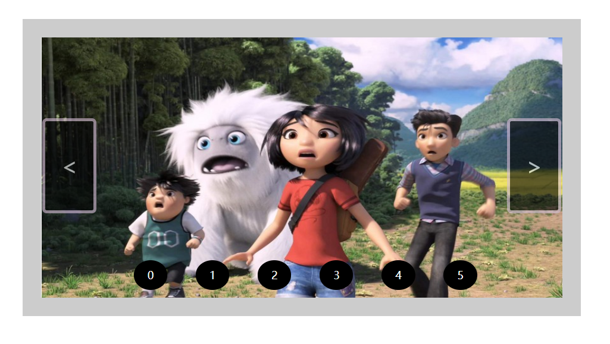

原文连接:https://www.cnblogs.com/ye16p/p/11688451.html
大家好我是 只是个单纯的小白，这是人生第一次写博客，准备写的内容是Jquery淡入淡出轮播图实现，在此之前学习JS写的轮播图效果都感觉不怎么好，学习了jQuery里的淡入淡出效果后又写了一次轮播图效果明显感觉好了许多。现在我就来分享下自己写轮播图的思路和方法。
HTML部分：


<div id="img-box" style="width:700px; height:350px;">
<img style="opacity: 1;" width="700px" height="350px" id="imgis" alt="《雪人奇缘》动画电影桌面壁纸"
src="https://img.ivsky.com/img/bizhi/pre/201909/25/abominable-003.jpg">
<img width="700px" height="350px" id="imgis" alt="葱翠的竹林图片"
src="https://img.ivsky.com/img/tupian/pre/201902/13/zhulin.jpg">
<img width="700px" height="350px" id="imgis" alt="汹涌的海浪图片"
src="https://img.ivsky.com/img/tupian/pre/201903/14/hailang-001.jpg">
<img width="700px" height="350px" id="imgis" alt="计时的沙漏图片"
src="https://img.ivsky.com/img/tupian/pre/201903/14/shalou-002.jpg">
<img width="700px" height="350px" id="imgis" alt="油菜花图片"
src="https://img.ivsky.com/img/tupian/pre/201902/13/youcaihua-002.jpg">
<img width="700px" height="350px" id="imgis" alt="紫乐多肉图片"
src="https://img.ivsky.com/img/bizhi/pre/201906/27/yingguo_duanmaomao-008.jpg">
<div id="img-left"> < </div>
<div id="img-right"> > </div>
<div id="img-num">
<li class="num-one">0</li>
<li class="num-two">1</li>
<li class="num-three">2</li>
<li class="num-four">3</li>
<li class="num-five">4</li>
<li class="num-six">5</li>
</div>
</div>CSS部分:
<style>
* {
margin: 0;
padding: 0;
}
#img-box {
position: relative;
border: 25px solid #ccc;
margin: 100px auto;
}
#img-box img {
position: absolute;
display: block;
opacity: 0;
float: left;
cursor:pointer;
}
#img-box #img-left,
#img-box #img-right{
position: absolute;
width: 65px;
height: 120px;
border: 4px solid thistle;
border-radius: 6px;
background-color: black;
opacity: 0.6;
cursor: pointer;
color: #fff;
font-size: 30px;
text-align: center;
line-height: 120px;
}
#img-box #img-left {
left: 1px;
top: 31%;
}
#img-box #img-right {
right: 1px;
top: 31%;
}
#img-box #img-num{
position:absolute;
width:500px;
height:50px;
/* border:2px solid red; */
bottom:0px;
left:15%;
display:flex;
flex-direction:row;
justify-content:space-around;
}
#img-box #img-num li{
display:inline-block;
list-style:none;
font-size:14px;
color:#fff;
text-align: center;
line-height: 40px;
cursor: pointer;
width:45px;
height:40px;
border-radius: 50%;
background-color:black;
}
</style>这是HTML 和 CSS两部分。展示的效果是这样的:

下面的就是JS部分:
<script>
$(document).ready(function () {
var imgLeath = $("img").length;
var liLeath = $("li").length;
// 显示图片的下标 (全局变量)
var n = 0;
//设置定时器timer
var timer = setInterval(time, 4000);
// 轮播函数
// index 为 隐藏图片 ondex为显示的图片
function time() {
n++;
if (n == imgLeath) {
n = 0;
}
for(var i=0; i<imgLeath; i++) {
$("#img-box img").eq(i).fadeTo(0,0);
}
$("#img-box img").eq((n)).delay(50).fadeTo(500, 1);
}
//设置点击切换效果 (右)
var rightteum;
$("#img-right").click(function () {
for (var i = 0; i < imgLeath; i++)
{
if ($("#img-box img").eq(i).css("opacity") != '0')
{
// 获取当前图片显示的下标
righteum = i;
}
}
if(righteum == 5)
{
righteum = 5;
}
n = (righteum);
time();
});
// 设置点击切换效果 (左)
var lefteum;
$("#img-left").click(function () {
for(var i=0; i<imgLeath; i++){
if($("#img-box img").eq(i).css("opacity") != '0'){
// 获取当前图片的下标
lefteum = i;
}
}
if(lefteum == 0){
lefteum = 6;
}
n = (lefteum-2);
time();
});
// 当鼠标移入框内 轮播图停止
$("#img-box").mouseover(function(){
clearInterval(timer);
});
//当鼠标移出框内 轮播图进行
$("#img-box").mouseout(function(){
timer = setInterval(time,4000);
});
//点击li序号 图片就切换到那一张
for(var i=0; i<liLeath; i++) {
//闭包问题
(function(i){
$("#img-num li").eq(i).click(function(){
// i为切换图片的下标
console.log(i);
//把 (i-1) 传给 n 因为在 time() 函数中 要进行 n++
n = (i-1);
time();
});
})(i)
}
})
</script>
我就来说说我写这个轮播图的想法和思路:
这个 time()函数 是整个轮播图的关键，轮播图通过jQuery的 fadeTo() 实现显示和隐藏， 定义的 n 是显示哪一张图片的下标, time() 里的 for循环是在显示下一张图片之前 遍历所有图片都隐藏 防止有图片和显示的图片透明度都为1的情况。
点击按钮切换效果中: for循坏的目的是为了获取6张图片里显示的那一张图片的下标，然后根据 左 右切换的情况 传值 给 n 并且 执行函数 time()。
鼠标移入移出函数: 启动计时器： timer = setInterval(time,4000); 停止计时器 ：clearInterval(timer); 。
点击li序号切换图片: 通过for()循坏遍历整个li， 这还有个闭包问题 必须使用 立即执行函数，思路和 点击按钮切换效果相同。
这是整个代码的效果图:

这就是写整个轮播图的要用到的,希望大家可以采纳，博客的图片来自天堂图片网挺好看的 。蟹蟹大家哦！！
2019-10-16 20:57:14